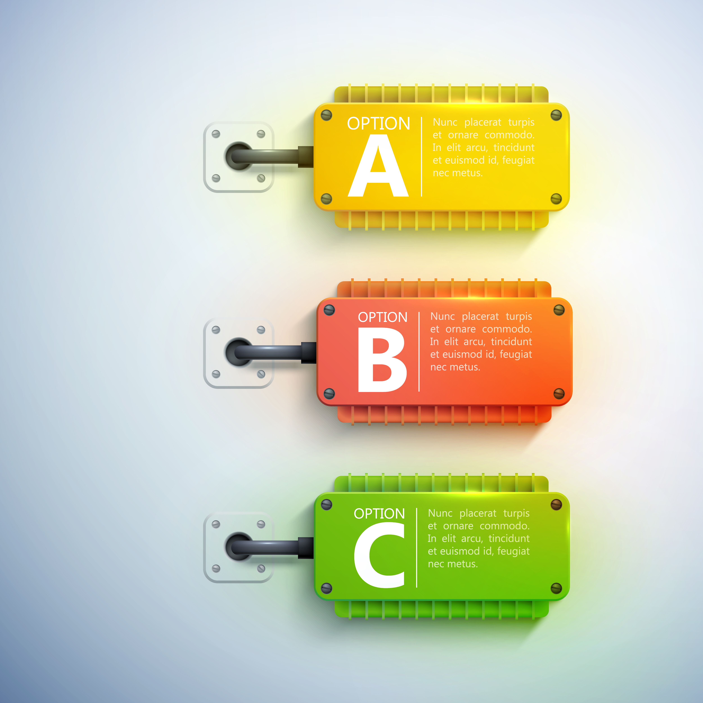
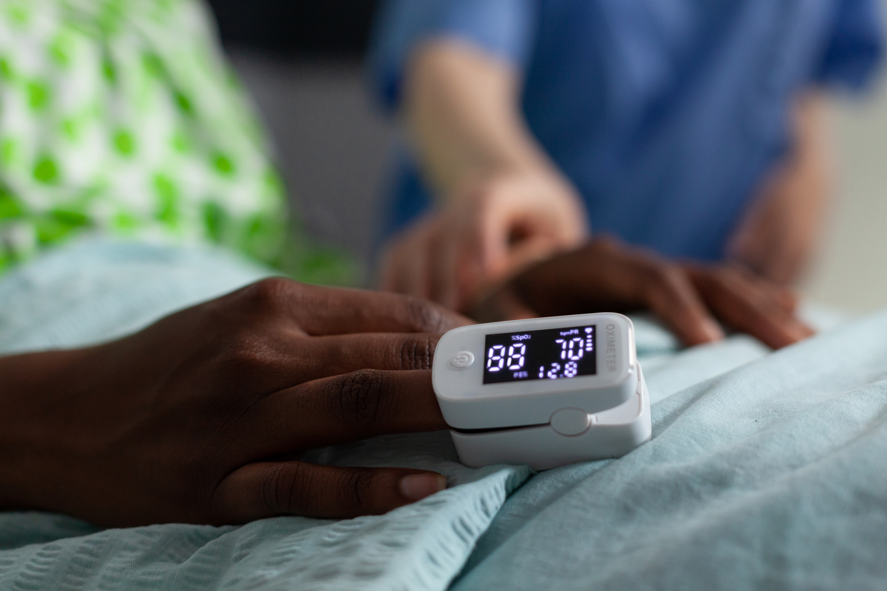

L’intelligence au service de chaque vie.
Aulia Care est une plateforme de santé nouvelle génération qui réunit le système hospitalier, l’intelligence artificielle et la santé connectée. Elle relie établissements, professionnels, patients et technologies pour comprendre, connecter, anticiper et mieux soigner.
+
AULIA CARE CORE
+
DIAGNOSTIC AGENT
+
CONNECTED CARE

Consultation intelligente
Assistée par Diagnostic Agent
Le professionnel vérifie et valideAulia Care, une plateforme 3 en 1
Aulia Care ne se limite pas à gérer un établissement. Sa vision relie trois dimensions complémentaires : Aulia Care Core pour faire fonctionner l’établissement, Diagnostic Agent pour assister les soins, et Connected Care pour prolonger le suivi au-delà de ses murs.
Le but est de faire circuler l’intelligence et l’information tout au long du parcours de santé : du premier accueil à la consultation, du suivi clinique à la prévention, jusqu’au patient connecté dans sa vie quotidienne.

Une intelligence au service de la vie
Comprendre. Connecter. Anticiper. Mieux soigner.
Une plateforme. Trois dimensions de la santé.
Du fonctionnement de l’établissement à l’intelligence appliquée aux soins, jusqu’à la continuité du suivi dans la vie du patient.
Objets connectés
Le soin se prolonge au-delà de l’établissement grâce à un environnement connecté entre le patient, ses professionnels et les services autorisés.
- Portail patient & télésanté
- Traitements & résultats
- Objets de santé connectés
Santé préventive
Faire évoluer la donnée de santé d’un simple historique vers une capacité de suivi, de compréhension des tendances et d’anticipation.
- Suivi longitudinal
- Détection de tendances
- Consultation et accompagnement à distance
Un écosystème connecté
Aulia Care relie les acteurs qui participent au parcours de santé sans confondre leurs responsabilités : établissements, soignants, patients, entreprises et technologies.
- Établissements & soignants
- Suivi familial & familles
- Technologies connectées
L’intelligence au service de chaque étape du soin
Du fonctionnement de l’établissement à l’intelligence appliquée aux soins, jusqu’à la continuité du suivi dans la vie du patient.
Le médecin parle. Diagnostic Agent écoute et structure.
Pendant la consultation, Diagnostic Agent peut transcrire l’échange, organiser les informations cliniques et présenter des éléments utiles à vérifier. L’intelligence assiste ; le médecin interprète, vérifie et valide.
Découvrir Diagnostic Agent
Réception intelligente
Résultats, orienter et organiser
Consultation assistée
Écouter, transcrire et structurer
Connected Care
Le soin au-delà de l’établissement
Un écosystème connecté
Comprendre pour agir plus tôtLe soin ne s’arrête plus à la porte de l’établissement
Du fonctionnement de l’établissement à l’intelligence appliquée aux soins, jusqu’à la continuité du suivi dans la vie du patient.
Connected Care : votre santé, entre vos mains
Le patient reste connecté à son parcours de santé : informations, traitements, télésanté, échanges sécurisés et dispositifs compatibles peuvent prolonger le suivi dans sa vie quotidienne.

Portail patient & gestion
Portail patient Specialist
Télésanté
Télésanté Expert
Traitements
Résultats Care
Résultats & admissions
Continuité du parcoursObjets connectés
Objets connectés CareSuivi familial sécurisé
Suivi familial TreatmentPlus qu’un logiciel. Une intelligence au service de la vie.
Aulia Care construit un environnement où établissements, professionnels, patients et technologies peuvent fonctionner comme les parties connectées d’un même système. Aujourd’hui pour mieux organiser et comprendre. Demain pour mieux anticiper et prévenir.

Comprendre
Transformer les données du parcours de santé en informations structurées, compréhensibles et utiles.
Centralisé opérationnelle
Relier l’établissement, les professionnels, les patients et les technologies dans un même écosystème.
Anticiper
Exploiter intelligemment les données disponibles pour identifier des tendances et soutenir une santé plus préventive.
Prêt pour une santé plus intelligente, connectée et préventive ?
Découvrez comment Aulia Care Core, Diagnostic Agent et Connected Care peuvent former un même écosystème autour de votre établissement, de vos professionnels et de vos patients.